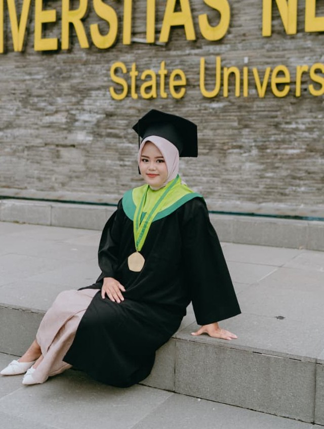

Yuk, terhubung!
- WhatsApp0812-3204-4165
- Emailalfisetya66@gmail.com
- Instagram@alvisetyaa1511
- LinkedInin/alvi-setya

A girl whose mind has been enlightened and whose horizons have been broadened can no longer live confined within old boundaries.
Halo! Saya Alvi, anak Bojonegoro kelahiran 24 April 2004 yang hobi jalan-jalan dan berburu kuliner.
Selama kuliah S1 Teknik Informatika di Universitas Negeri Surabaya, saya magang sebagai Mobile Apps Developer lewat program MSIB di BPSDM Kementerian Kominfo, menjadi Data Scientist di iLC Learning Center, dan mengikuti Coding Camp powered by DBS Foundation jalur Machine Learning. Bersama tim PKM, saya juga membuat Ethno Brain, game belajar matematika untuk anak dengan diskalkulia.
Di luar kuliah dan coding, saya paling senang traveling ke tempat baru dan mencoba kuliner di setiap tempat yang saya datangi. Sekarang saya sedang menempuh S2 Teknik Informatika di Institut Teknologi Sepuluh Nopember.
Coding Camp powered by DBS Foundation
Menyelesaikan jalur Machine Learning Engineer dari Dicoding × DBS Foundation dengan nilai akhir A.
iLC Learning Center, program MSIB VINIX7 Batch 2
Magang di divisi Junior Data Scientist: mengolah data dan membuat dashboard business intelligence dengan Looker Studio.
Magang MSIB Batch 7, BPSDM Kementerian Kominfo
Mengembangkan aplikasi SERASI untuk antisipasi risiko stunting pada bayi, bersama tim dan RSUD Dr. Soetomo.
PKM Riset Sosial Humaniora, Kemdiktisaintek
Mendapat pendanaan Ditjen Diktiristek untuk mengembangkan game edukasi Ethno Brain.
BEM FT UNESA, Malang
Kegiatan studi visit yang diselenggarakan Departemen Luar Negeri BEM FT UNESA.
Universitas Negeri Surabaya
Pelatihan keterampilan manajemen mahasiswa: perencanaan, kepemimpinan, dan pengelolaan organisasi.
Soetomo Early Risk Anticipation of Stunting Infant
Aplikasi mobile dan web untuk membantu mencegah stunting pada bayi berisiko tinggi, dikembangkan bersama tim magang MSIB dan RSUD Dr. Soetomo.
Game belajar matematika untuk anak diskalkulia
Game edukasi hasil PKM yang didanai Ditjen Diktiristek dan sudah tercatat hak ciptanya.
Game
Proyek machine learning dengan algoritma Random Forest.
Dashboard business intelligence dengan Looker Studio di iLC Learning Center.
Visual novel bertema matematika.
Proyek website bertema pendidikan.
Analisis data dengan Python menggunakan dataset kualitas udara.
Klik sertifikat Dicoding untuk melihat kredensial resminya.
Sekolah menengah atas
S1 Teknik Informatika
S2 Teknik Informatika